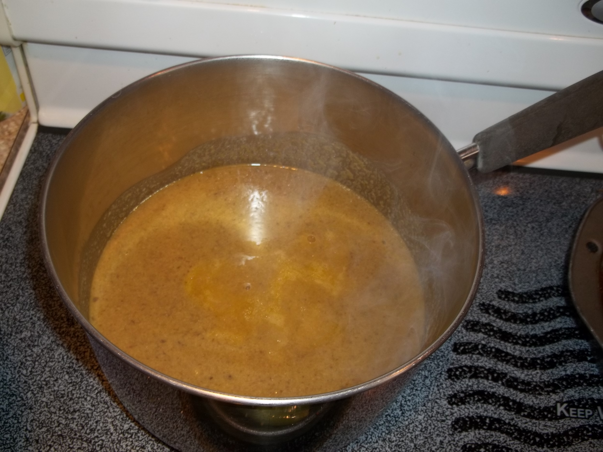
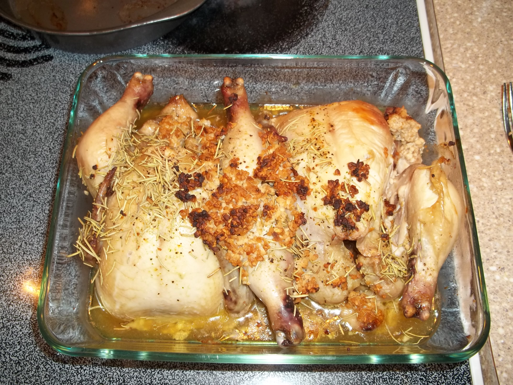
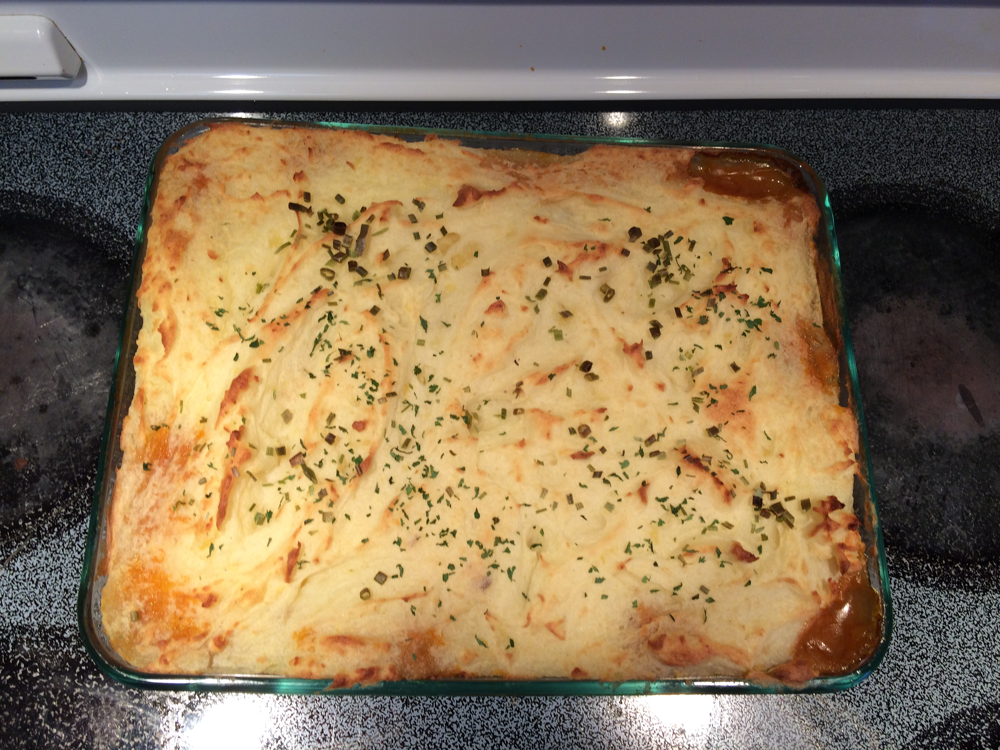
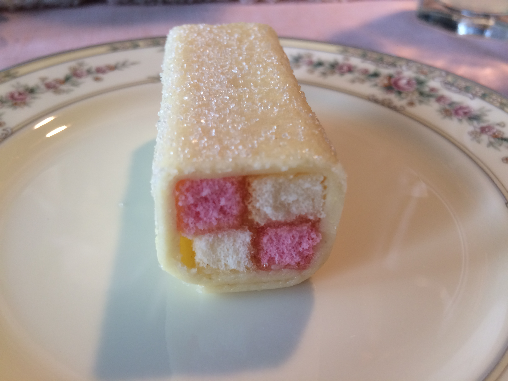
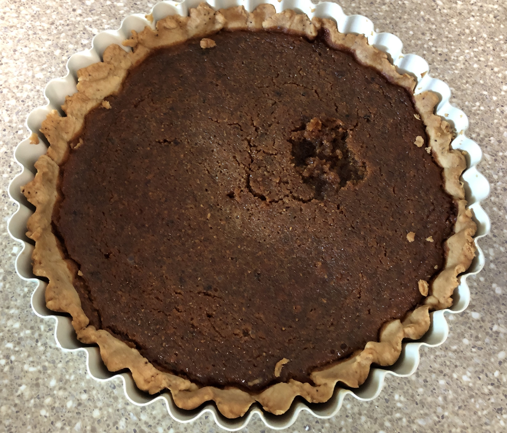
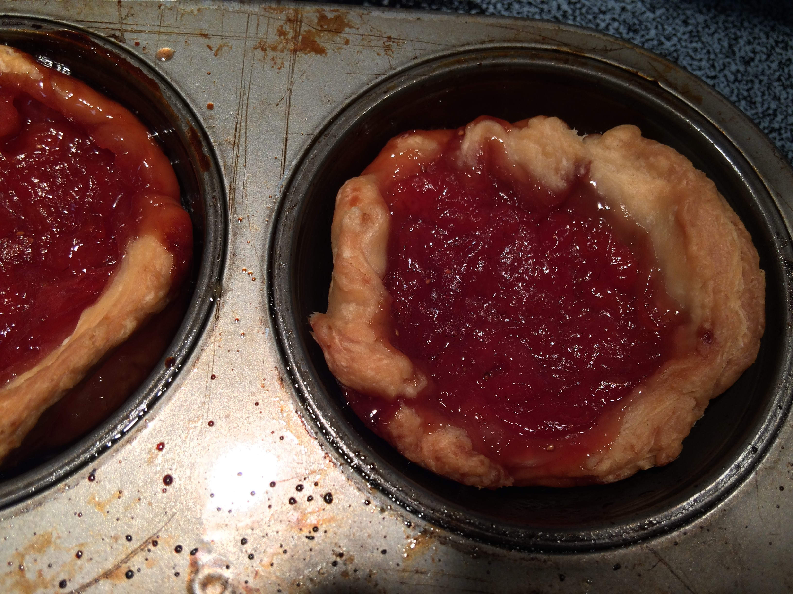
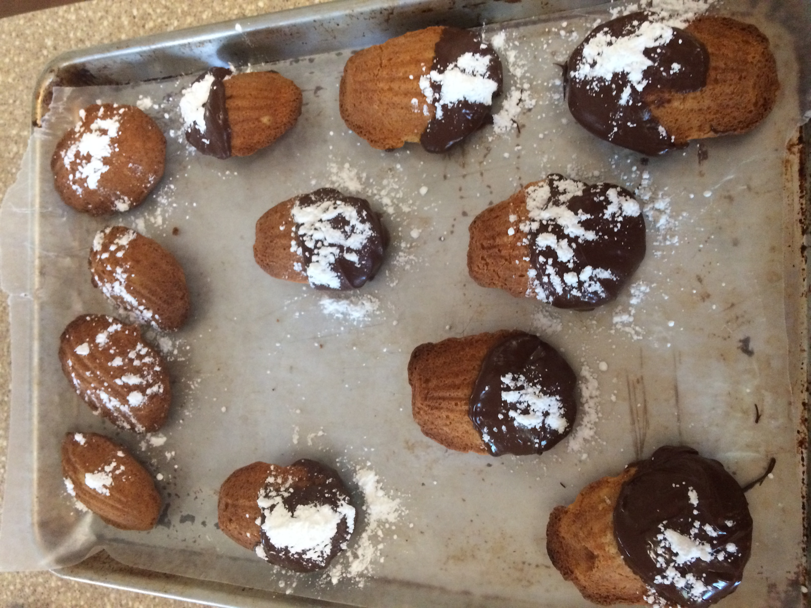
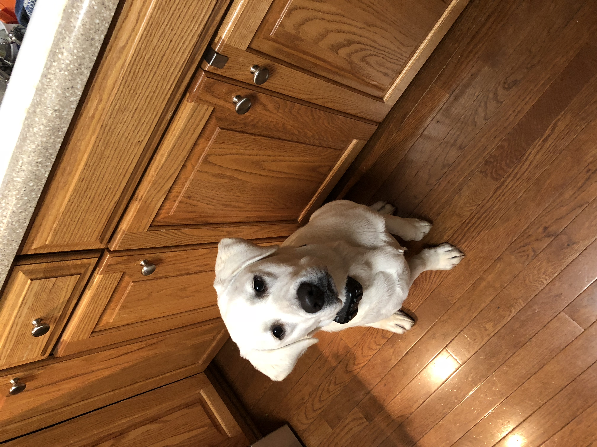

Despite my career change involving Launchcode, I will always have an interest in history. Downton Abbey is a great eaxmple of historical fiction. I've loved this British Drama ever since I started watching it during the airing of season 2. I also recently went with family and friends to the opening night of the movie, which was the epilogue I did not know we needed. My love for British cooking also started because of Downton Abbey. Most of the dishes in the show, for upstairs and downstairs characters, you can make at home and are delicious. Please note that I am not taking credit for any of these recipes. I used the recipes from The Unofficial Downton Abbey Cookbook to make these dishes and similar recipes can be found online. The Official Cookbook was released during the release of the movie. I plan to read it in the future. I would love to share what could be made easily with simple, everyday ingredients. Here are my favorite British foods to make that were inspired by Downton Abbey.
Kedgeree: This breakfast dish with fish, eggs, and rice was influenced during the period of British Colonization of India. It is seen in the pilot episode and the first British Food the audience is introduced to in the show. Here, we're already being shown the differences in the culture by what they can eat for breakfast. As seen in the photograph, I remade this dish eariler this year (but probably should have chopped the eggs and onions a little smaller).

Cream of Mushroom Soup: There are easier ways to make this dish than what is seen in the cookbook. I first made this soup for Easter dinner
one year.

Creamy Russet Leek Soup: This is good meal for the upstairs residents or the servants living downstairs. The recipe leaves the vegetables in their
simple form but you can blend it and add milk or cream before serving. This is a staple I usually eat when
I have plenty of potatoes or leftover leek broth in the the kitchen.

Mrs. Patmore's Dropped Roasted Chicken: Fans will remember this recipe in the episode where Mrs. Patmore made her "salty" raspberry pudding (I'd use
that recipe for this list but there are too many ways to make it). She also dropped one of the roasted chickens on the floor, hence the name. I also first
made this for that same Easter dinner and it's a regular for special occassions.

Shepard's Pie: It's basically ground meat, veggies, and potatoes. It's an old world casserole dish you can throw into the oven.

Yorkshire Puddings: Yorkshire Puddings basically rolls. This can be savory or sweet. The main way to cook this is to cook the batter in meat drippings (from cooking a pot roast) in a
muffin tin in the oven.

Crepes Suzette: From the season 2 opener. It's a famous French dessert of thin pancakes with a sugary Grand Mariner sauce.
I've tried to make these once but crepes are very delicate to flip in the skillet. This is one of the harder recipes
on this list but it's easily remembered from the show. The sauce has Grand Marnier, an orange-flavored liqueur, which you can purchase at any
store with a alcohol aisle.

British Battenburg Cake: From Easter this year. Battenburg's a delicous checkerboard sponge cake wrapped in apricot jam and almond paste.
This cake is store-bought but it's a lovely picture. It's also delicious!

Treacle Tart: This dessert is made with golden syrup and got it's name from the British slang word for "sweetheart".
It's also a favorite from the Harry Potter Series.

Sybil's Ginger Nut Biscuits: My favorite blog recipe! It's top ingredients are butter, golden syrup,
and ginger. In British food culture, they're called biscuits and you eat them with your tea. I made this recipe multiple times
and I recommend them to any cookie lover out there.
Honorable Mention: Chestnuts(not pictured): Chestnuts can be roasted around Christmastime. In the Unofficial Cookbook, there's a chestnut soup that you can blend together and add cream to before serving. I have yet to make this recipe but I have made chestnut rice (kurigohan) and a basic cupcake recipe (Mont Blanc Cupcakes) in the fall, which are recipes from Japan.

Jam Tarts: I made these eariler this year to get rid of some homemade strawberry jam in the freezer.
You can find a nice recipe for jam tarts online. You can have any kind of tart with a cup of tea.


Soupe à l'Oignon (French Onion Soup) with Madeleines: I make French Onion Soup every New Year's Day. One year, I made them with Madeleines that were dipped in chocolate. "Soupe à l' Oignon" is how it's mentioned in the unoffical cookbook and both recipes can found online with a reference to Downton Abbey.
Meat Pies(not pictured): Meat Pies are sold at any international grocery store and can easily be made at home for lunch or dinner.

Bonus Picture: My Food Critic hogging the kitchen floor everytime I cook something. She looks regal in this picture but she's acutally waiting for something to be dropped on the floor.
I have the recipes if anyone wants to try to make it themselves at home. You can also order the cookbooks or research them online.